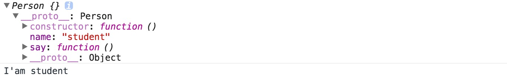
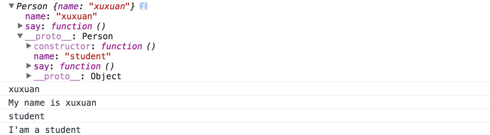
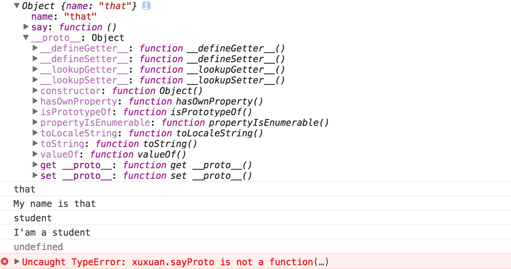
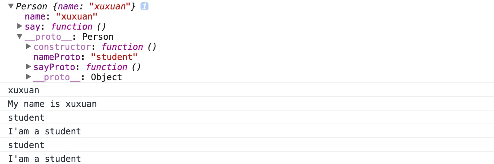

对象字面量：
//开始定义一个空对象
var dog = {};
//添加属性
dog.name = "wangwagn";
//添加方法
dog.getName = function(){
return dog.name;
}
//改变属性和方法
dog.getName = function(){
return "Fido";
}
//删除属性和方法
delete dog.name;
//添加属性和方法
dog.say = function(){
return "Woof!";
}
dog.fleas = true;
//也可以在创建对象时，向其添加属性和方法
var dog = {
name : "wangwang";
getName : function(){
return this.name;
}
}
注意：全局变量（var 声明）不可删
创建对象的两种的方法
第一种是使用字面量方法创建对象：var oschina = {goes:"far"};
第二种是使用内置构造函数创建对象：var oschina = new Object(); car.gose = "far";
我们应该尽量使用字面量方法创建对象，其显著优点在于它仅仅输入更短的字符。
但是选择它还有以下几个更重要的原因：
- 选择字面量法创建对象强调该对象仅是一个可变的hash映射，而不是从对象中提取的属性或方法。
- 对使用Object构造函数相对，使用字面量在于它并没有作用域解析。因为可能以同样的名字创建一个局部函数，解释器需要从调用Object()的位置开始一直向上查询作用域链，知道发现全局Object构造函数
- 构造函数Object可以仅接受一个参数，并且还依赖传递的值，该Object()可能会委派另一个内置函数来创建对象，并且返回了一个并非期望的不同对象。如将数字、字符串、布尔值当做参数传递给Object构造函数，其结果是获得了以不同构造函数所创建的对象，例如：
var oschina = new Object(1);ochina.constructor为Number；传递的值是动态的，直到运行时才确定其类型，这种行为会导致意想不到的结果。
//一个空对象
var o = new Object();
console.log(o.constructor === Object); //true
//一个数值对象
var o = new Object(1);
console.log(o.constructor === Number); //true
console.log(o.toFixed(2)); //1.00
//一个字符串对象
var o = new Object("I am a string");
console.log(o.constructor === String); //true
//一般的对象没有substring方法，但是字符串对象有
console.log(typeof o.substring); //"function"
//一个布尔对象
var o = new Object(true);
console.log(o.constructor === Boolean); //true
自定义构造函数
var Person = function(name){
this.name = name;
this.say = function(){
return "I'am " + this.name;
};
}
var Person = function(name){
//使用对象字面量模式创建一个新对象
//var this = {};
//向this添加属性和方法
this.name = name;
this.say = function(){
return "I'am " + this.name;
};
//return this;
}
var xuxuan = new Person("kathy");
console.log(xuxuan.say());
使用new调用构造函数：
1. 创建一个空对象，并且this引用了该对象，同时还继承了该函数的原型
2. 属性和方法添加到this引用的对象中
3. 新创建的对象由this引用， 最后隐式地返回this（如果没有显示的返回其他对象）
//var this = {};
以上语句并不是真相的全部哦。因为“空”对象实际上并不空，已从Person的原型中继承了许多成员，因此它更像下面的语句：
//var this = Object.create(Person.prototype);
构造函数的返回值
栗子1:
当new出一个对象，构造函数默认总是返回this引用的对象；
但是如果在构造函数中不向this添加任何成员，那么返回的对象也不是空的（继承了构造函数原型成员）
var Person = function(){}
Person.prototype.name = "student";
Person.prototype.say = function(){
return "I'am " + this.name;
}
var xuxuan = new Person();
console.log(xuxuan);
console.log(xuxuan.say());
输出：

栗子2:
如果原型属性和方法和实例属性和方法同名， 查找顺序：先对象本身，后原型属性,如果要访问原型中同名属性和方法，通过__proto__来访问
var Person = function(){
this.name = "xuxuan";
this.say = function(){
return "My name is " + this.name;
};
}
Person.prototype.name = "student";
Person.prototype.say = function(){
return "I'am a " + this.name;
}
var xuxuan = new Person();
console.log(xuxuan);
console.log(xuxuan.name);
console.log(xuxuan.say());
console.log(xuxuan.__proto__.name);
console.log(xuxuan.__proto__.say());
输出：

栗子3：
- 构造函数可以根据需要返回任意其他对象，只要它是一个对象；
- Person构造函数中，返回自定义对象that，这种模式的问题：丢失原型链的链接，添加到Person原型的成员，对于对象来说都是不可用的；
- 如果返回并非对象的值，不会出错，但是函数会忽略该值，隐式地返回this所引用的对象；
var Person = function(){
this.name = "xuxuan";
this.say = function(){
return "My name is " + this.name;
};
var that = {};
that.name = "that";
that.say = function(){
return "My name is " + that.name;
};
return that;
}
Person.prototype.nameProto = "student";
Person.prototype.sayProto = function(){
return "I'am a " + Person.prototype.nameProto;
}
var xuxuan = new Person();
console.log(xuxuan);
console.log(xuxuan.name);
console.log(xuxuan.say());
console.log(Person.prototype.nameProto);
console.log(Person.prototype.sayProto());
console.log(xuxuan.nameProto);
console.log(xuxuan.sayProto());
输出：

栗子4：
将上例的return that; 改为 return 1;
输出：

强制使用new的模式
问题的提出：构造函数不用new调用，不会导致语法或运行错误，但是会导致逻辑错误，即this指向全局对象window
var name = "global";
function Person(){
this.name = "xuxuan";
}
var xx = new Person();
console.log(typeof xx);//object
console.log(xx.name);//xuxuan
console.log(xx instanceof Person);//true
console.log(window.name);//global
var oo = Person();
console.log(window.name);//xuxuan
console.log(typeof oo);//undefined
console.log(oo.name);//Uncaught TypeError: Cannot read property 'name' of undefined
这种意外情况在ECMAScript5中得到了解决，并且在严格模式下，this不会指向全局对象
解决方式一：使用that
缺点：丢失原型的链接
//下面的模式可以确保构造函数的行为总是表现出构造函数应有的行为
//这种模式的缺点：丢失原型的链接
function Person(){
var that={};
that.name = "that";
return that;
}
Person.prototype.wantMore = true;
var xx = new Person();
var oo = Person();
console.log(xx.name);//that
console.log(oo.name);//that
console.log(xx.wantMore);//undefined
console.log(oo.wantMore);//undefined
//对于简单的对象，可以仅仅从字面量返回一个对象
function Person(){
return{
name : "that";
};
}
解决方式二：自调用构造函数
优点：解决了上述丢失原型链接的问题
//在构造函数中检查this是否为构造函数的一个实例，如果否，构造函数再次调用自身，并在这次调用中正确的使用new操作符
function Person(){
if(!(this instanceof Person)){
return new Person();
}
this.name = "xuxuan";
}
Person.prototype.wantMore = true;
var xx = new Person();
var oo = Person();
console.log(xx.name);//xuxuan
console.log(oo.name);//xuxuan
console.log(xx.wantMore);//true
console.log(oo.wantMore);//true
另一种检测方法：将this与arguments.callee比较，而不是在代码中硬编码构造函数名称
if(!(this instanceof arguments.callee)){
return new arguments.callee();
}
解释：当函数被调用时，在每个函数内部将会创建一个名为arguments的对象，包含了传递给该函数的所有参数；
同时，它有一个名为callee的属性，指向被调用的函数；
注意：ES5严格模式不支持arguments.callee属性
两种方法创建数组：
- Array()构造函数
- 数组字面量
var a = new Array("foo","bar");
var b = ["xx","oo"];
console.log(typeof a);//object
console.log(typeof b);//object
console.log(a instanceof Array);//true
console.log(b instanceof Array);//true
console.log(a instanceof Object);//true
console.log(b instanceof Object);//true
console.log(a.constructor === Array);//true
console.log(b.constructor === Array);//true
console.log(a.constructor === Object);//false
console.log(b.constructor === Object);//false
数组字面量优点：
1. 语法简单、明确
2. 避免Array()构造函数可能产生的陷阱
var a = [3];
console.log(a.length); //1
console.log(a[0]); //3
var a = new Array(3);
console.log(a.length); //3
console.log(typeof a[0]); //undefined
var a = [3.14];
console.log(a.length); //1
console.log(a[0]); //3.14
var a = new Array(3.14);//Uncaught RangeError: Invalid array length
但是，可以巧妙地使用Array()构造函数，比如创建重复字符串
var white = new Array(5).join("a");
console.log(white);//aaaa
检查数组性质
当数组作为操作数并使用typeof操作符时，其结果会返回”object”，因为数组也是对象。但是这对于排除错误没有什么帮助，通常我们需要知道某个值是否为一个数组。有时候检查代码可以用是否存在length属性或一些数组方法，但是这些检查并非万能，我们无法确定一个非数组对象就不能拥有这些属性和方法。还可以使用instanceof Array进行检查，但是这种检查存在兼容性问题。
ECMAScript定义了Array.isArray()方法，接受参数为数组时返回true。但是有些环境不支持这种方法，最好的检查数组性质的方法是Object.prototype.toString.call方法，若是数组会返回[object Array]，若是对象则为[object object]，因此要用如下方法检测：
if(typeof Array.isArray === "undefined"){
Array.isArray = function(arg){
return Object.prototype.toString.call(arg) === "[object Array]";
};
}
//调用Array.isArray()
var xx = function(arg){
return Object.prototype.toString.call(arg);
}
console.log(xx(false)); //[object Boolean]
console.log(xx(1)); //[object Number]
console.log(xx({})); //[object Object]
console.log(xx([])); //[object Array]
console.log(xx(new Number(1))); //[object Number]
//测试：
console.log(Array.isArray([]));//true
console.log(Array.isArray({o:[1,2,3]}));//false
Array.isxxArray = function(arg){
console.log(Object.prototype.toString());
console.log(arg.toString());
console.log(arg);
return Object.prototype.toString.call(arg) === "[object Array]";
}
console.log(Array.isxxArray([1,2,3]));
console.log(Array.isxxArray({o:[1,2,3]}));
/*
[object Object]
1,2,3
[1, 2, 3]
true
[object Object]
[object Object]
Object {o: Array[3]}
false
*/
正则表达式的两种创建方法：
- 字面量
- new RegExp()构造函数
var re = /\\/gm;
var re = new RegExp("\\\\","gm");
推荐字面量的方式：
1.字面量写法简短
2.new RegExp()，需要转义引号，还需要双反斜杠
var no_letters = "abc123XYZ".replace(/[a-z]/gi,"");
console.log(no_letters);//123
使用new RegExp()的场景：
某些场景中无法实现确定模式，只能在运行时以字符串方式创建
两者区别：
字面量在解析时只有一次创建了一个对象；
如果在一个循环中创建了相同的正则表达式（使用字面量的方式），那么后面返回的对象与前面创建的对象相同，并且将所有的属性将被设置为第一次的值。
下面栗子演示了如何两次返回同一个对象：
function getRE(){
var re = /[a-z]/;
re.foo = "bar";
return re;
}
var reg = new getRE(),
reg2 = new getRE();
console.log(reg === reg2); //true
reg.foo = "baz";
console.log(reg2.foo); //baz
但是，这种情况已经在ES5中得到改变，并且字面量会创建新的对象，许多浏览器已支持，所以这种模式并不可依赖哦~
基本类型值包装器
js 5个基本的值类型：数字、字符串、布尔、null、undefined
除了null、undefined，其他三个都有基本包装对象（primitive wrapper object）
Number() String() Boolean()
栗子1：基本（primitive） vs. 对象（object）
var n = 100;
console.log(typeof n); //number
var nobj = new Number("100");
console.log(typeof nobj); //object
栗子2:
包装对象包含了一些有用的属性和方法，但是这些方法在基本值类型上也能起作用，只要调用这些方法，基本值类型就可在在后台被临时转换为一个对象。
var s = "hello";
console.log(s.toUpperCase()); //HELLO
console.log("monkey".slice(3,6)); //key
console.log((22/7).toPrecision(3)); //3.14
栗子3：
使用包装对象的场景就是有扩充值以及持久保存状态的需要，因为基本值类型不是对象，不可能扩充属性。
//基本字符串
var greet = "Hello there";
//为了使用split()方法，基本数据类型被转为对象
console.log(greet.split(" ")[0]); //Hello
//试图增加一个原始数据类型并不会导致错误
greet.smile = true;
//但是它并不会实际运行
console.log(greet.smile); //undefined
//包装对象
var sayHi = new String("Hi sweet");
sayHi.smile = true;
console.log(sayHi.smile); //true
栗子4：
当使用没有带new操作符时，包装函数将传递进来的参数转成一个基本类型值。
console.log(typeof Number(1)); //number
console.log(typeof Number("1")); //number
console.log(typeof Number(new Number())); //number
console.log(Number(new Number())); //0
console.log(typeof String(1)); //string
console.log(typeof Boolean(1)); //boolean
在一般情况下，除了
Date()构造函数以外，很少需要用其他内置构造函数。
错误对象
js 内置错误构造函数：Error() SyntaxError() TypeError() …
这些错误构造函数都带有throw语句
错误对象有如下属性：
- name —— 错误类型
- message —— 错误消息
- 其他属性多个浏览器不一致，不可靠
throw用于任何对象，并不是由某个错误构造函数所创建的对象，因此可以选择抛出自己的对象。
这种错误对象可以有属性name message，以及任意希望传递给catch语句来处理的其他类型的信息。
try{
//发生意外的事情，抛出一个错误
throw {
name:"myErrorType", //自定义错误类型
message:"oops",
extra:"This was rather embarrassing",
remedy:genericErrorHandler //指定应该处理该错误的函数
};
}catch(e){
alert(e.message); //oops
e.remedy(); //调用函数genericErrorHandler()
}